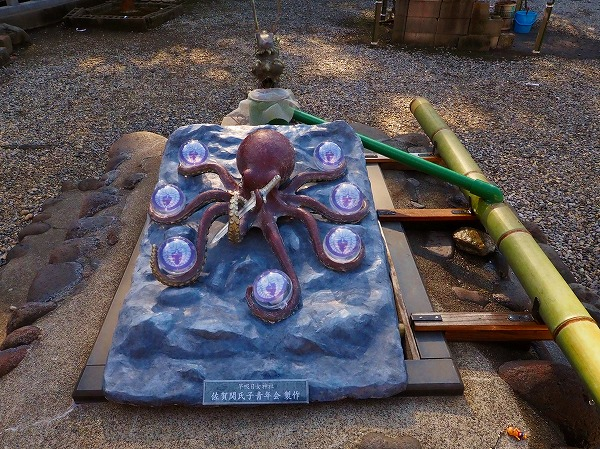
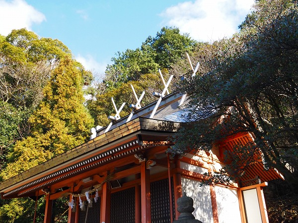
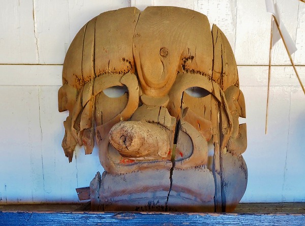

大分である。
関サバ関アジで有名な大分市の佐賀関にある
早吸日女神社（はやすいひめじんじゃ）に行ってみた。
この佐賀関という場所は地理的に非常に興味深い場所で、佐賀関と豊予海峡別名
、速吸瀬戸を挟んで愛媛県の佐多岬がある。
その距離わずか14キロ。
つまり
九州と四国が最も接近している場所にあるのだ（←ココ重要）。
海峡だけに
潮の流れも速く（←ココ重要）、だからこそ良質の魚が獲れるのだろう。
ちなみにこの神社に来る前に旬の関サバを頂いてきたが、
まぁ～～～美味しゅうございました♡
で、早吸日女神社。
ちなみにすぐ隣にはエネオス系のJX金属の度肝を抜かれるような巨大な精錬所や高い煙突が聳えている。
色んな意味で特殊な場所だが、境内は極落ち着いた雰囲気であった。

山門を潜るといきなり
タコのオブジェがお出迎え。
7つの玉と剣を抱きしめている。
これについては後程説明しよう。
参道は緩やかなカーブを描いている。
奥には拝殿が見える。
その手前にある伊邪那岐社。
昭和48年に再建されたのだが、その際
世界で最初に屋根にチタンを使ったという。
もちろんお隣にある非鉄金属の生産をしているJX金属と無関係なはずはなかろう。
バブルの頃、伊豆の世界真光文明教団本殿の屋根が確か総チタンで葺いたというのが建築界では結構話題になった。
当時の論調としてはかなり高価なチタンを屋根に使うとは、何というお金持ち～、的な扱いだったように記憶している。
それよりはるか前にチタンで屋根を葺いたとは驚くほかない。

千木とかがビチっとしてるのがチタンっぽいですね。
その向こうにはJX金属の巨大な煙突。
まるで茨城県の日立鉱山の大煙突のように煙道が設けられていて超カッコイかった。
で、拝殿。
横長な建物だ。

唐破風の中央には龍がのたうち回っている。
その左右には不思議な造形が。
正面向かって左には中華風の建物。
右には亀に乗った
浦島太郎。
そうか、右は
竜宮城なんだな。
この辺も海にほど近い神社のナイスな演出である。
拝殿内部にお邪魔します。
正面に朱塗りの本殿が見える。
そして拝殿の内部の至る所に無数の貼り紙が。
えええ～。
これって、全部
タコの絵？
見ればほぼ同じ絵柄だ。
恐らく神社サイドが用意したものなのだろう。
先程、タコのオブジェがあった事からも判るように、この神社は
タコを崇拝する神社なのだ。
この習俗の根拠には神武天皇の東征伝説が関与しているという。
日本書紀によると、天照大神の孫、瓊瓊杵尊（ニニギノミコト）の曾孫である神武天皇が日本全体を統治しようと志し、現在の宮崎県から近畿へと向かう途上、この速吸瀬戸に船で通りかかった。
ところがそこは潮の流れが速く海上交通の難所だったのだ。
当時、この海の底には大蛸が住んでいて潮の流れを鎮めていたと信じられていた。
そこで地元の海女である黒砂、真砂の姉妹が海に潜り、その大蛸が持っていた神剣を貰い受け、神武天皇に献上したのだという。
その剣のお陰なのか神武天皇は無事、海峡を渡り宇佐に到着した。
その後、近畿を平定し初代の天皇となったのだ。そして奉納された剣を御神体として早吸日女神社が創建されたのだという。
そのため、現在でもここで祈願する参拝者はタコを食べずに、
蛸断ち祈願をするのだそうな。
奉納されているタコの絵はほとんどが神社側で用意したモノだが、奉納者が自ら描いたタコのイラストも多い。
そのどれもが味わい深いので、スペースの許す限り（そんなものはないけどね）紹介したい。
ぶしゅ―って墨を吹いているタコ。たまらん。
どこか吉田戦車の火星田マチ子を思わせるタコ。
タコとシェイクハンドしている人の図。
念じれば叶う、とあるがタコと握手することで何かが叶うのだろうか？

全体像が良く判らない、かなりアバンギャルドなタコ。
恐らくチビッ子が描いたのだろうが、大人だったら天才に違いない。
チョットこわもてのタコ。
どこかで見たことがあるような気がするのだが、思い出せない。
多分何かのマンガだと思うのだが、年取るとダメですねー。
お心当たりの方、いらっしゃったらメールミー。
力強いタッチのイラスト。
許してもえたらいいですね。
無数に貼られたタコのイラスト。
様々な願いが込められている。
船絵馬もいくつか奉納されていた。
やはり
航海の安全を祈念したものなのだろう。
特殊な地理的条件を持った場所には特殊な信仰が生まれる、という好例だ。

拝殿の向かいにあった巨大な面。
凄いっすね。